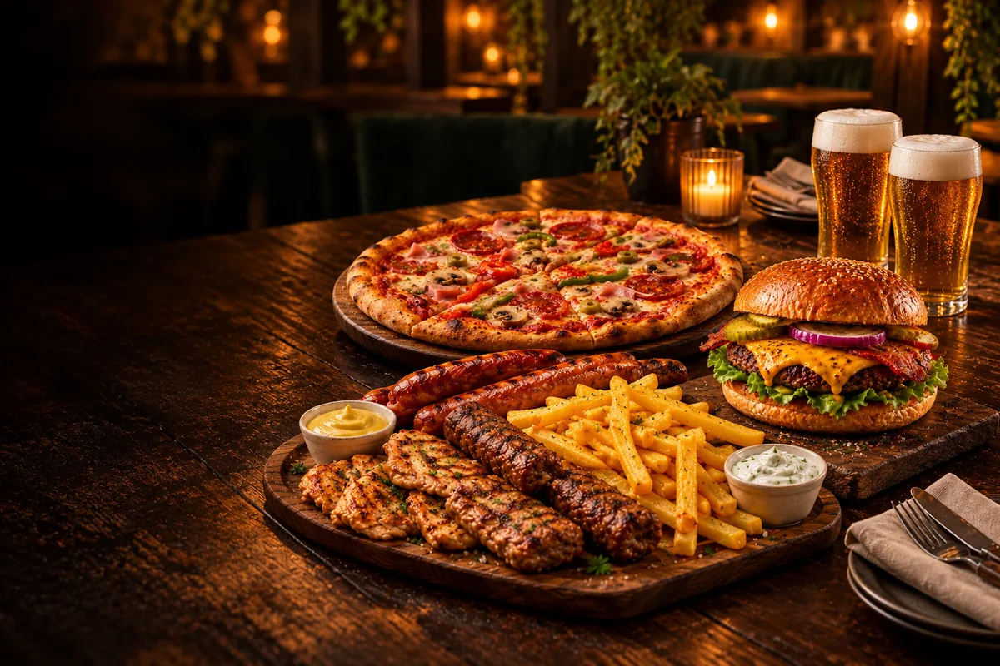
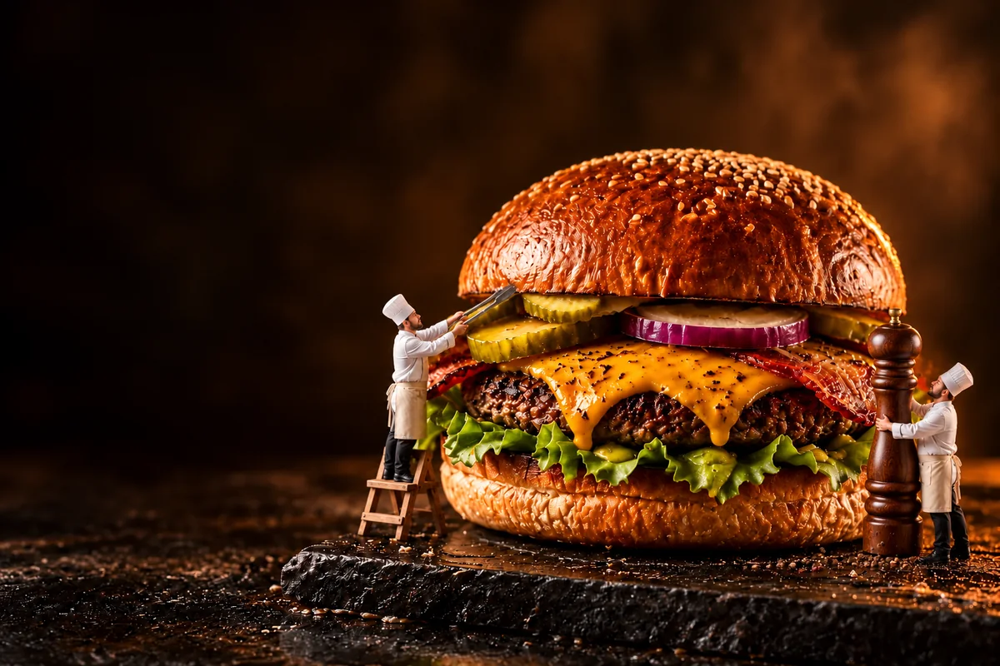
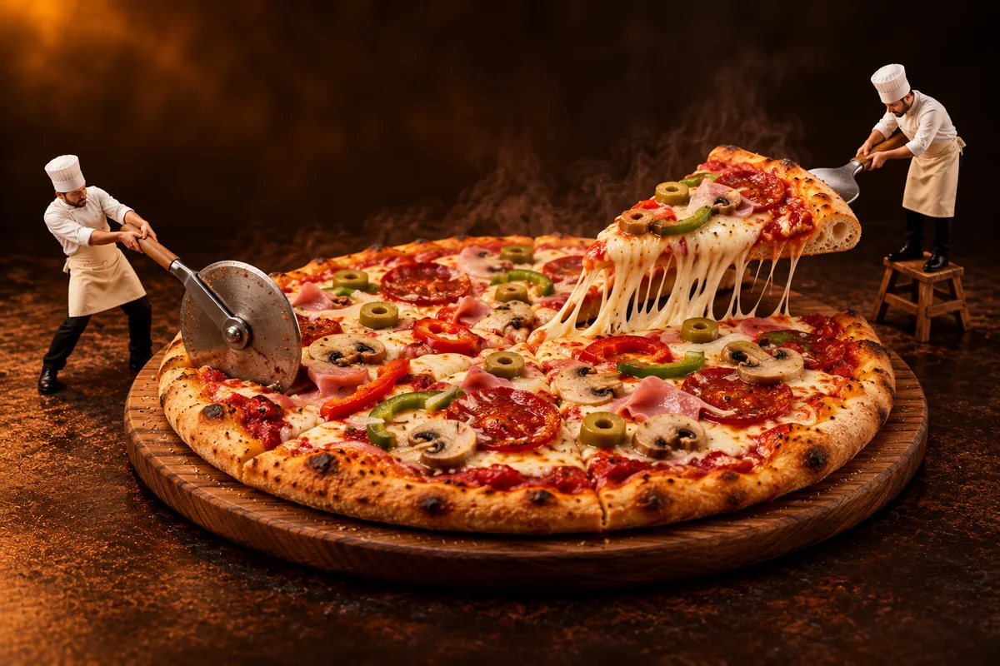
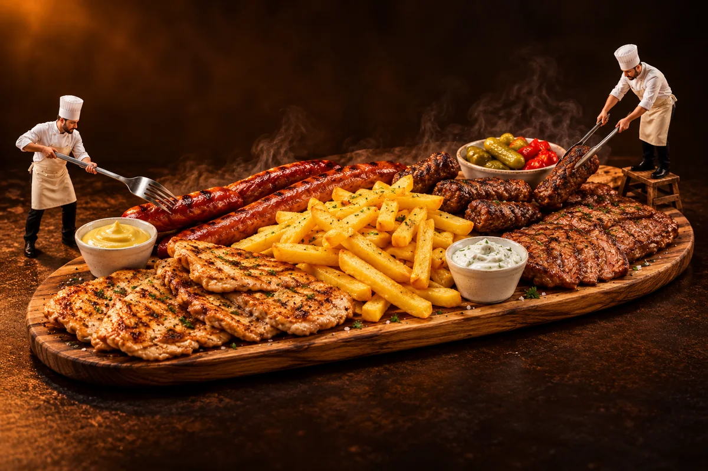
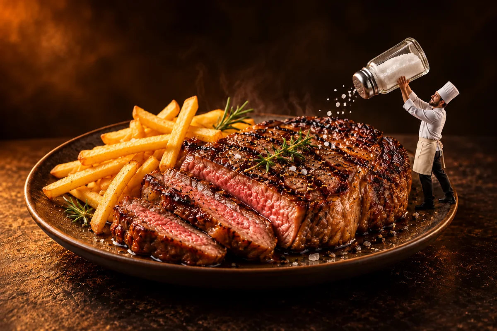
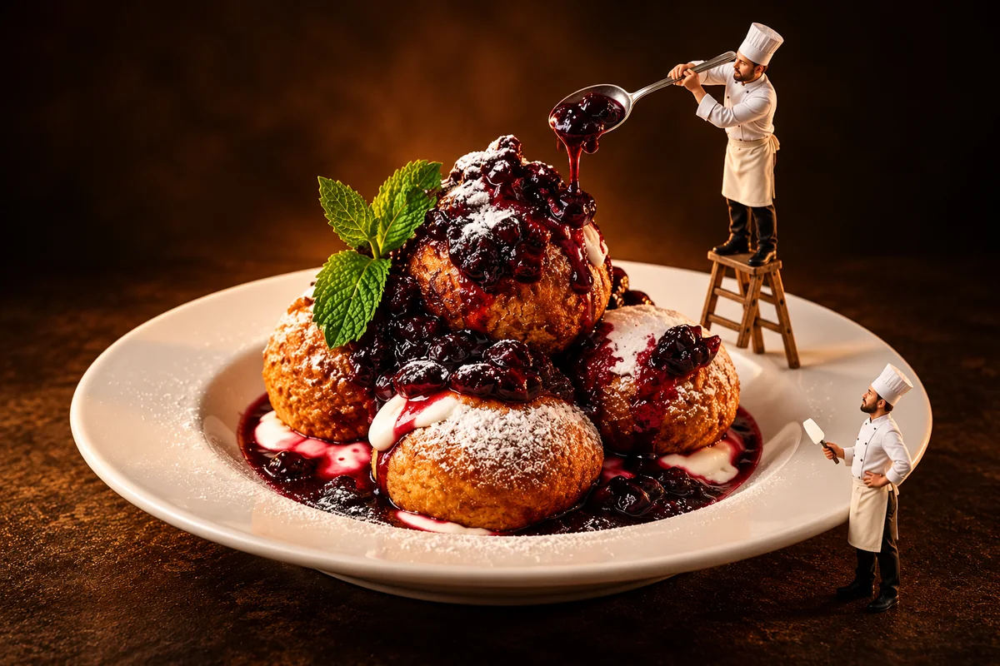
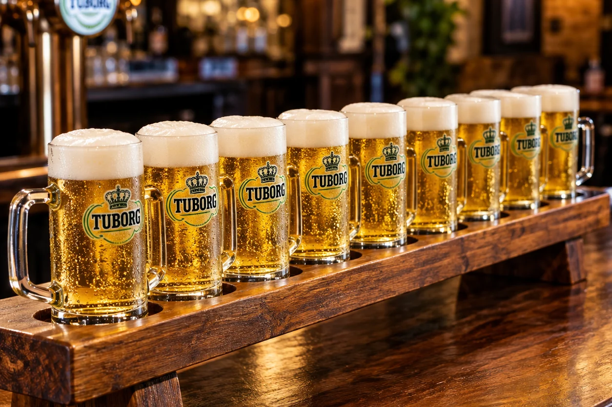

La ce ți-e poftă?
Gusturi pentru
seri bune.
Burgeri, pizza, platouri, grătar și ceva dulce. Câteva gusturi de descoperit înainte de următoarea ieșire.
Preparatele și prețurile actualizate
Vezi meniul complet↗
01 / DE POFTĂBurgeri.
Burgeri.
Greu de uitat.
Unele seri încep simplu.
Cu un burger și oamenii potriviți.


03 / PENTRU TOATĂ GAȘCA
Platouri.
Grătare, mici și cârnați. Mai multe gusturi, la aceeași masă.
Deschide meniul complet ↗
04 / RUMENIT CUM TREBUIE
Grătar de vită.
Pentru serile în care ai poftă de ceva bine rumenit.
Deschide meniul complet ↗
05 / UN FINAL DULCE
Deserturi.
Papanași, smântână și dulceață. Mai păstrăm loc?
Deschide meniul complet ↗
06 / DE CIOCNITBere rece.
Bere rece.
Și nu numai.
Bere, vin, cocktailuri sau o cafea.
Alege ce merge cu seara ta.
Ai mai multe de descoperit.
Toate produsele, prețurile și detaliile sunt în meniul complet.